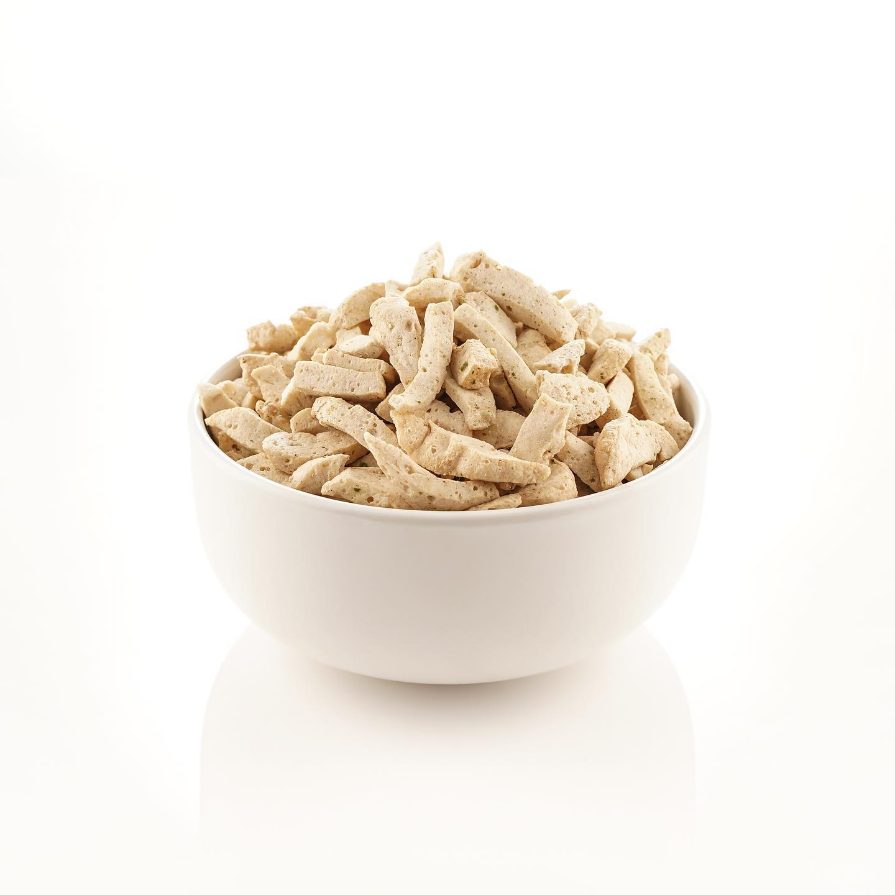
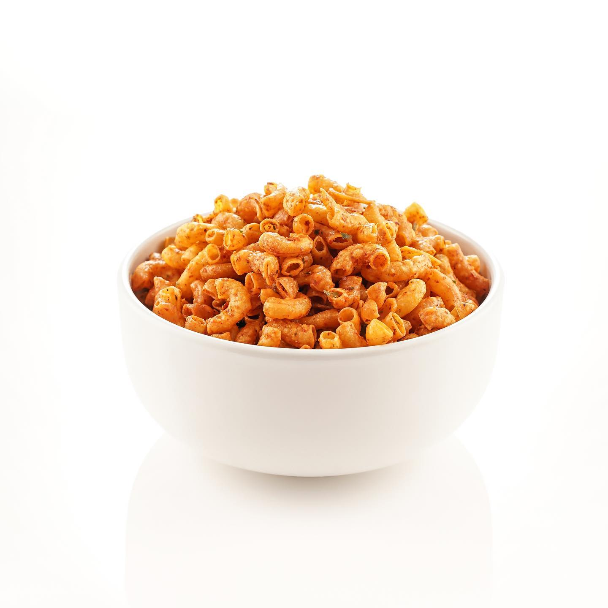
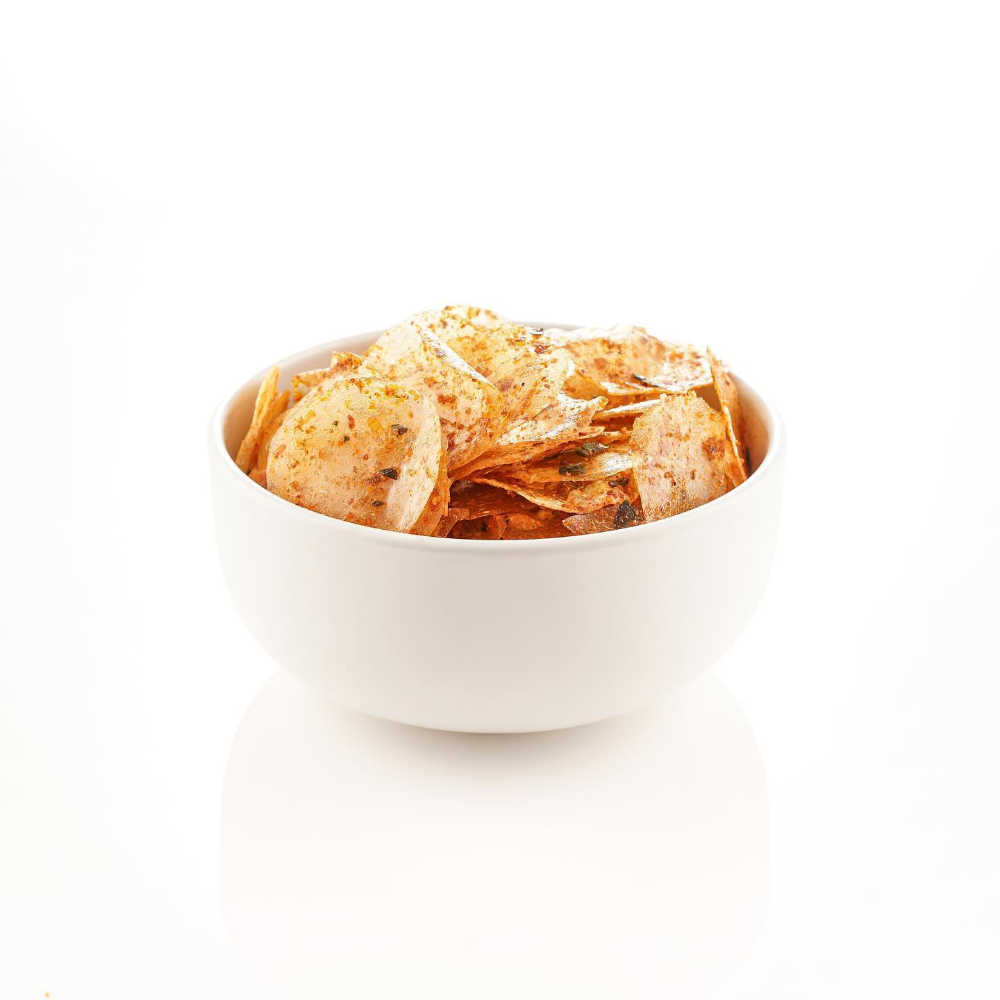
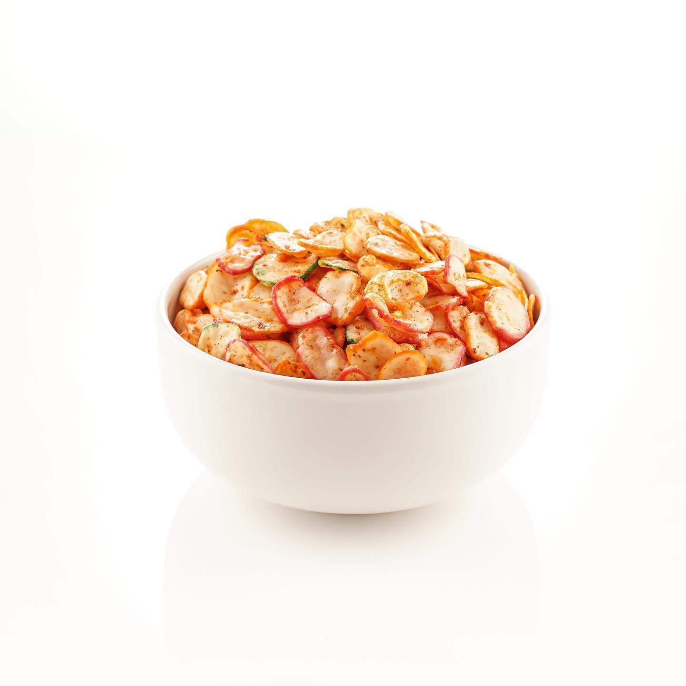

Basreng adalah camilan dari olahan baso ikan yang digoreng. Enak, gurih, pedas dan renyah.

Makaroni pedas adalah camilan dari kerupuk makaroni yang digoreng. Enak, gurih, dan renyah.

Kripca adalah singkatan dari keripik kaca dinamakan demikian karena bentuknya yang sangat tipis. Renyah dan garing, gurih, pedas dan enak.

Kerupuk seblak adalah camilan berbahan dasar kerupuk yang digoreng dan diberi bumbu seblak kering. Pedas, gurih, dan renyah.